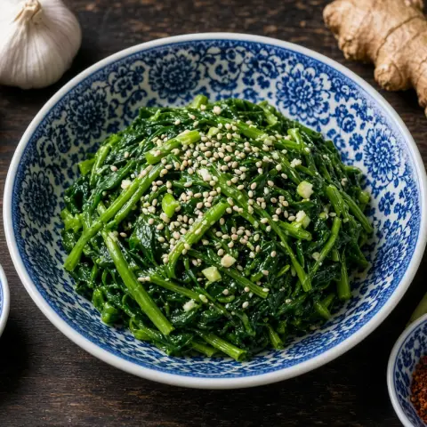

🥬 ほうれん草のナムル
ゆでたほうれん草をにんにく、ごま油、炒りごまで和えた、手早くできる韓国の副菜。
材料
- ほうれん草280 g
- ねぎ1 本
- 醤油2 小さじ
- にんにく1 かけ
- 砂糖0.5 小さじ
- ごま油1 小さじ
- ごま1 小さじ
- 塩適量
作り方
- 根を切り、砂が残らないようにほうれん草をよく洗う。塩を入れた沸騰した湯で20〜30秒、しんなりするまでゆでる。
- すぐに氷水にとって火が入りすぎないようにする。
- 水けを軽く絞り、7〜8cm長さに切る。
- 刻んだねぎ、醤油、にんにくのみじん切り、砂糖、ごま油、ごま、塩少々を加え、かたまりをほぐしながら手で和える。10分おいて味をなじませる。